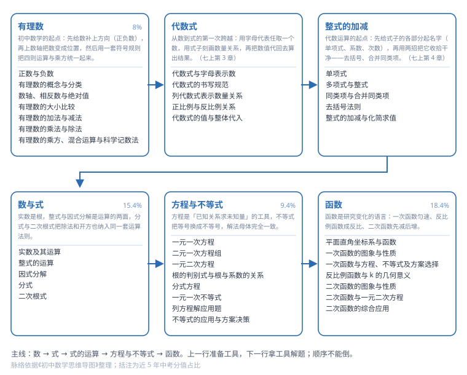

第 1 领域 · 代数
用符号表示关系，用运算求解关系：实数 → 式子 → 方程 → 函数。（中考约 43.2% 分值）

这张图是这一领域的知识骨架：从左到右是学习顺序，每个方框是一个主题，方框下面的小字是主题内的知识点。照着它走，不会出现「做这道题要用到还没学的工具」的情况。
实数是根，整式与因式分解是运算的两面，分式与二次根式把除法和开方也纳入同一套运算法则。（约 15.4%）
方程是「已知关系求未知量」的工具，不等式把等号换成不等号，解法母体完全一致。（约 9.4%）
函数是研究变化的语言：一次函数匀速、反比例函数成反比、二次函数先减后增。（约 18.4%）
输入关键词，回车打开第一条